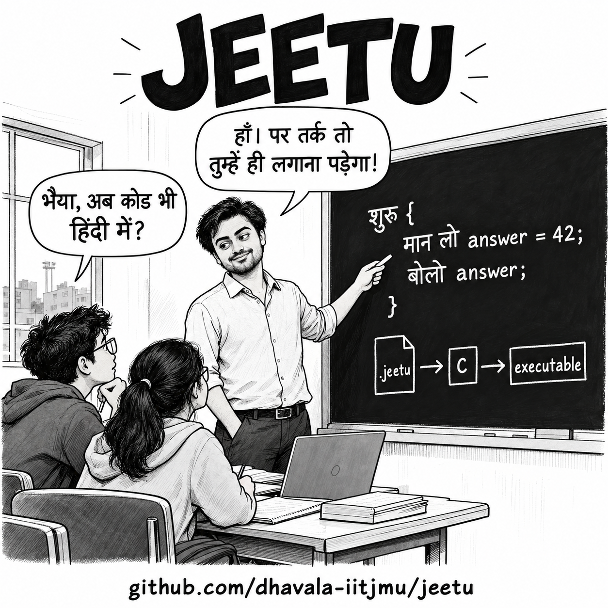

MU-1: Jeetu, Constrained Programming and Code Reading (Make-up)
Date: Thu Oct 29, 2026 (make-up class) · 8:00–8:50 am · 12LH3004
This is one of the two make-up classes for the October 19–20 holidays.
Purpose
Begin with Jeetu and constrained programming: how a small set of constructs can express computations, and why richer abstractions remain useful. Then read the two-player Tic-Tac-Toe program, starting with its specification, mapping the functions and overall flow, and examining each function in detail.
Class sequence: Jeetu and constrained programming, followed by reading Tic-Tac-Toe. Debugger practice belongs to the holiday self-study and Lab 11.
Reading another author’s C program: Tic-Tac-Toe
We will read the two-human-player version of Cukowski’s Tic-Tac-Toe tutorial. The accompanying live-coding video shows its development. An AI opponent is an optional extension, not part of the basic game.
These notes refer to this source revision. Keep the original source open beside the notes. We first understand the game, then map the program, and only then examine individual functions.
1. Start with the specification
Two players, X and O, take turns placing their symbol on a 3 × 3 board. X moves first. A move specifies a row and column, each numbered 1 to 3. The cell must be empty. An invalid numeric move is rejected and the same player tries again.
A player wins by occupying all three cells of a row, column or diagonal. If the board is full and neither player has won, the game is a draw. Stop after a win or draw; otherwise switch players.
This gives us five operations: initialise the board, display it, accept a legal move, detect a winner and detect a full board. The implementation must also coordinate their order.
Input limitation: the original program assumes that each attempt supplies two integers. It does not safely handle letters or end-of-input. We will distinguish its intended game rules from this implementation limitation.
2. Read breadth first: data, signatures and main
First scan the file without tracing the bodies of the helper functions. It contains one global board, five helper functions and main.
| Function as written | Inputs and result | Role in the plan |
|---|---|---|
void initializeBoard() |
No arguments; changes the global board | Mark every cell empty. |
void displayBoard() |
Reads the board; prints to the terminal | Show the current position. |
void playerMove(char player) |
Receives a copy of the player’s symbol; changes the board | Keep asking until a legal numeric move is entered. |
char checkWinner() |
Reads the board; returns 'X', 'O' or ' ' |
Identify a winner, if any. |
int isBoardFull() |
Reads the board; returns 0 or 1 | Report whether any empty cell remains. |
int main() |
Coordinates the game; returns a process status | Initialise, repeat turns, then finish. |
The global board is an implicit input to several functions. A signature alone does not reveal all the data a function uses or changes. playerMove does not return a board: it updates shared storage directly.
In C11, prefer (void) for functions taking no arguments, for example char checkWinner(void). The source uses the older empty-parentheses form, which can trigger compiler warnings.
Read main using each helper’s role before opening its body:
Set winner to empty and current player to X
Initialise the board
Repeat:
Display the board
Accept a move from the current player
Check for a winner
If someone won: display, announce and stop
If the board is full: display, announce a draw and stop
Switch playersWhy this order? A ninth move can fill the board and win at the same time. Check for a win before declaring a draw. Switching players belongs after both ending checks.
Concepts from class: functions, arguments, return values and scope (W09); conditionals and loops (W05–W06). This reading method lets us understand the overall plan before tracing every statement.
3. Identify the representation
SIZE is a preprocessor macro whose value is 3. board is a global two-dimensional array of char. Each cell holds one of three values:
| Stored value | Meaning |
|---|---|
' ' |
Empty cell: a space character |
'X' |
X occupies the cell |
'O' |
O occupies the cell |
A displayed coordinate such as row 2, column 3 corresponds to board[1][2]: the user counts from 1, while array indices start at 0.
This is not an array of C strings. Each row contains three game cells, with no extra space reserved for a null terminator. The display function prints individual characters with %c, not rows with %s.
Global storage is initially zero-initialised, but zero is not the chosen empty-cell marker. initializeBoard must write spaces before play begins.
Concepts from class: character values, macros and preprocessing (W03–W05), arrays and nested loops (W07), two-dimensional arrays (W09), characters versus null-terminated strings (W10).
Design question: why is the board global?
board is declared outside all functions, before their definitions. Its name has file scope, so the functions below that declaration can refer to it directly. The array has static storage duration: it exists for the entire execution of the program.
When initializeBoard writes board[i][j], no board argument has been passed. The function finds the name through scope and changes the shared array. The same is true when playerMove records a move. In contrast, i and j are local loop variables, and player is a local parameter containing a copy of the supplied character.
| Variable | Where its name is available | What it represents |
|---|---|---|
board |
File scope, from its declaration onward | The shared game board |
currentPlayer, winner |
Inside main’s block |
State used to coordinate turns |
player |
Inside playerMove |
A copied argument identifying the player |
row, col |
Inside playerMove’s block |
One attempted move |
i, j declared in for headers |
Within their respective loops | Traversal indices |
Why might the author choose this? The application has one board and is contained in one small file. Sharing it avoids repeating an array parameter in every function and keeps the initial example short.
What does that choice cost? A call such as checkWinner() does not show which board it examines. Functions can accidentally change shared state. Tests must reset that state, and using two independent boards becomes awkward. These costs grow as the program grows.
An alternative interface makes the dependency explicit:
void initializeBoard(char game[SIZE][SIZE]);
char checkWinner(const char game[SIZE][SIZE]);The caller would supply board to each function. In a C function parameter, this two-dimensional array declaration is adjusted to a pointer to a row; C still passes that pointer by value. The array is not copied. Writes through the first parameter affect the caller’s board, while const in the second interface prevents element writes through that parameter. Scope and parameter passing are different mechanisms for reaching the data.
Question the design: is a shared global board reasonable for this small demonstration? What would you change if the program needed to compare several possible boards, run independent games or test functions separately? Explicit parameters help make those dependencies visible; they do not automatically copy or isolate the board.
4. Read each function in detail
initializeBoard: establish the starting state
The outer loop selects a row; the inner loop visits its columns. Each visit assigns the empty-cell marker. On return, all nine cells contain spaces.
Trace the visited indices: (0,0), (0,1), (0,2), then (1,0), and so on. Both bounds use < SIZE, so the loops never visit index 3.
Concepts: nested loops, array bounds, assignment and initialisation. Check: what changes if the loops use <= SIZE?
displayBoard: turn data into a visible board
The nested loops print each cell. A vertical separator is printed only when another column follows; a horizontal separator is printed only when another row follows. Newlines finish the rows.
The function reads the board but does not alter it. This separates the game’s state from how it is displayed.
Concepts: formatted output, %c, nested loops and boundary conditions. Check: why are separator conditions based on SIZE - 1?
playerMove: validate before writing
The parameter player is passed by value. The local variables row and col receive input through their addresses, supplied to scanf using &.
The legality condition checks these facts in order:
- The row is between 1 and 3.
- The column is between 1 and 3.
- The corresponding cell is empty.
C’s && evaluates left to right and stops when an operand is false. Consequently, for successfully read integer inputs, the board access is reached only after the coordinates have passed the range checks. The order prevents an out-of-range numeric move from becoming an invalid array access.
A legal move writes the symbol and executes break. This leaves the input loop and returns to main. An occupied or out-of-range numeric move prints a message and repeats the loop; it does not consume the player’s turn.
Concepts: pass by value and local variables (W09), addresses and pointer arguments (W10), short-circuit conditions, indexing, loops and break (W05–W07).
Review finding: scanf returns the number of successful conversions. Here it must return 2 before either coordinate is used. The original ignores that return value. Failed input can leave a variable uninitialised or unchanged; an invalid token can remain unread. A robust version needs a defined retry or exit path, not just the existing range check.
checkWinner: inspect the eight possible winning lines
For each index i, the function checks row i and column i. Three iterations therefore examine six lines. Two separate conditions examine the diagonals.
Each check requires equal symbols and a nonempty cell. Equality alone would incorrectly identify three spaces as a winning line. The winning symbol is returned immediately. If no line wins, the final return value is the space character.
The space result means no winner, not necessarily draw. The caller must still ask whether the board is full.
Concepts: indexed comparisons, Boolean expressions, loops, early return and a char return value. Check: draw the eight winning lines and match each to a source condition.
isBoardFull: search for a counterexample
The function returns 0 as soon as it finds an empty cell. It returns 1 only after inspecting every cell without finding one.
The position of the final return matters. Returning 1 after the first occupied cell would establish only that one cell is occupied, not that the entire board is full.
Concepts: array traversal, search, early return and integer truth values. Check: consider a board whose only empty cell is the final cell visited.
Return to main: switching players
The original uses C’s conditional operator:
currentPlayer = (currentPlayer == 'X') ? 'O' : 'X';Its syntax is condition ? value_if_true : value_if_false. It chooses a value; the assignment stores that value in currentPlayer. For this statement, the equivalent familiar form is:
if (currentPlayer == 'X') {
currentPlayer = 'O';
} else {
currentPlayer = 'X';
}The conditional operator is explained here because it is less familiar than the if-else form used in class. The game’s logic does not depend on using it.
5. Trace one complete game
All coordinates below use the player’s 1-based numbering.
| Turn | Player | Row, column | Result after the move |
|---|---|---|---|
| 1 | X | 1, 1 | No winner; O plays next. |
| 2 | O | 2, 1 | No winner; X plays next. |
| 3 | X | 1, 2 | No winner; O plays next. |
| 4 | O | 2, 2 | No winner; X plays next. |
| 5 | X | 1, 3 | First row contains X, X, X; announce X and stop. |
After each move, annotate the changed cell, currentPlayer, the returned winner, and the next branch in main. Only one cell changes per accepted move.
6. Compile, run and test
Download or clone the repository, then compile the original file:
git clone https://github.com/Cukowski/Tic-Tac-Toe-Tutorials.git
cd Tic-Tac-Toe-Tutorials
gcc -std=c11 -Wall -Wextra -pedantic "Tic-Tac-Toe Basic/TicTacToe.c" -o tictactoe
./tictactoeEnter the coordinates from the trace, one pair per prompt. The final announcement is Player X wins!. Some compilers warn about the empty parameter lists discussed above.
| Test | What to check |
|---|---|
| X wins the first row | The game ends immediately after X’s winning move. |
| O wins a column or diagonal | Winner detection works for both symbols and different directions. |
| Nine moves without a winner | The game announces a tie. |
| Attempt an occupied cell | The board stays unchanged and the same player retries. |
| Enter row 0 or column 4 | The numeric move is rejected before indexing the board. |
| Win on the ninth move | A full board with a winner is not announced as a tie. |
A draw sequence is (1,1), (1,2), (1,3), (2,2), (2,1), (2,3), (3,2), (3,1), (3,3), alternating X and O. These numeric-input paths are suitable for running the original. Nonnumeric input and end-of-input require the input-handling correction described above.
7. Review the design against what we have learnt
The basic program uses functions, global and local scope, character and two-dimensional arrays, nested loops, branching, short-circuit evaluation, pointer arguments for input, and formatted output. It does not require structures, dynamic allocation, file handling or recursion. A program should use the constructs its problem needs.
Three useful improvements to discuss:
- Check input conversion and define what happens on invalid text or end-of-input.
- Pass the board explicitly to functions so their dependencies are visible.
- Make the board-size assumption consistent. Although
SIZEis a macro, the winner tests, input limits and printed separators are written specifically for 3 × 3 play. Changing the macro alone does not generalise the game.
These observations are part of reading another author’s code: understand its successful path, identify its assumptions, and distinguish a working example from a fully robust application.
Optional extension: a minimax opponent
Keep two human players for the basic exercise. Interested students can explore the repository’s AI version and its minimax explanation.
Tic-Tac-Toe can be modelled as a two-player zero-sum game: from the computer’s perspective, assign a win +1, a loss -1 and a draw 0; the opponent’s payoff is the negative. Minimax examines possible moves, assumes the opponent also chooses optimally, and selects the move with the best guaranteed outcome. This is a game-search algorithm; it does not require a trained model.
For each candidate move, place a symbol, recursively evaluate the resulting position, then restore the empty cell before trying the next move. Terminal positions provide the base cases. This connects recursion, state restoration and testing. Full correct search from the empty board allows optimal play to guarantee a draw or better; it does not guarantee a win against another optimal player.
Further reading
Further practice: holiday self-study on Git, IDE use and debugging.
After Class
Write a short explanation of the program’s data flow and one test that would help detect an incorrect change. Keep it for the holiday tools practice.
Interesting C examples
These are optional examples to explore. Read a small part of a project and trace its data before trying to understand the entire codebase.
| Example | What to explore |
|---|---|
| Kilo — text editor | Rows of text, strings, dynamic allocation and the editorRowsToString function. |
| 2048 — console game | Arrays, movement and merging; countEmpty, findTarget and slideArray. Tile values are stored as exponents, with zero for an empty cell. |
| Snake — raylib example | Structures, arrays of segments, movement and collision checks. Graphics and keyboard input use raylib. |
Advanced references: Redis linked lists for linked data structures, and TinyExpr for expression parsing and evaluation. These go beyond the introductory reading activity.
PAGAL Notes
Jeetu: how much of a language do we need?

Cartoon source: Jeetu repository.

Jeetu is a small educational language with Devanagari keywords. It compiles into readable C, then into an executable. Its अगर and जब तक correspond to if and while. Jeetu also supports functions and other features; today we ask what happens if we deliberately restrict what we use.
Recall our floor and ceiling exercise. We worked out the result without calling the floor or ceiling operations. This is constrained programming: temporarily removing a convenient operation to understand how it can be constructed from simpler ones.
Do we need for, switch and functions?
Allow variables, assignment, arithmetic, comparisons, if-else and while. Keep main and standard input/output as the C program’s surrounding machinery; do not introduce additional functions for the exercise.
for: move initialisation before awhile, and the update to the end of its body. If the original containscontinue, preserve its update behaviour too.switch: independent cases can become anif-elsechain. Deliberate fall-through needs additional care.- Functions: a simple call can be expanded at its call site. General calls and recursion require explicit control state and storage for suspended work; merely copying the body is not sufficient.
Try this: explain what the following complete program computes. It uses neither a for loop nor an additional function.
#include <stdio.h>
int main(void)
{
int a = 48;
int b = 18;
while (a != b) {
if (a > b) {
a = a - b;
} else {
b = b - a;
}
}
printf("%d\n", a);
return 0;
}It prints 6, the greatest common divisor. For positive inputs, each subtraction preserves the common divisors and reduces a + b. What goes wrong if one input is zero? Multiplication, division and remainder are not needed for this algorithm.
Does this make the language Turing complete?
Turing completeness means being able to simulate any Turing machine, given arbitrarily much time and memory. It does not mean solving every conceivable problem, or solving computable problems efficiently.
if and while alone are not enough: we also need operations on data and a way to represent potentially unbounded state. With a fixed number of ordinary fixed-width C integers and no other growing storage, that condition is absent. If our theoretical integer variables are unbounded, a counter-machine construction can establish universality.
Jeetu takes another route: its Turing-completeness argument uses two arbitrarily growable sequences to represent the tape on either side of a machine’s current cell. Conditions select a transition and a loop repeats it. The actual executable still has finite memory and can run out of resources. Compiling to C, or computing GCD, is not itself a proof of Turing completeness.
Game of Life: computation from local rules
We encountered Conway’s Game of Life in Week 09 and Lab 07. Each cell’s next state depends only on its current state and its eight neighbours. All cells update simultaneously.
Game of Life is also Turing complete: suitably constructed patterns can simulate a Turing machine. The computation is encoded in the arrangement of cells and unfolds as generations advance. The rules do not need explicit if, while or function syntax. Those are constructs we use in C to implement the simulator.
The theoretical result assumes an unbounded grid and arbitrarily much time. Our fixed-size classroom board has only finitely many states; it cannot provide unbounded storage. Writing a Life simulator in C is not itself a proof that Life is universal.
- Watch John Conway discuss the Game of Life.
- Read Turing Completeness — Old Dominion University, which includes Game of Life among its examples.
Why keep the other constructs?
Functions organise behaviour; arrays and structures organise data; different loops express common patterns clearly. They help us read, test, debug and maintain programs even when they add no fundamental computational power.
Closing question: if two programs compute the same result, what makes one easier to understand and trust? Computational power, efficiency and ease of expression are different considerations. Use restrictions to learn how a construct works, then choose useful abstractions when developing software.